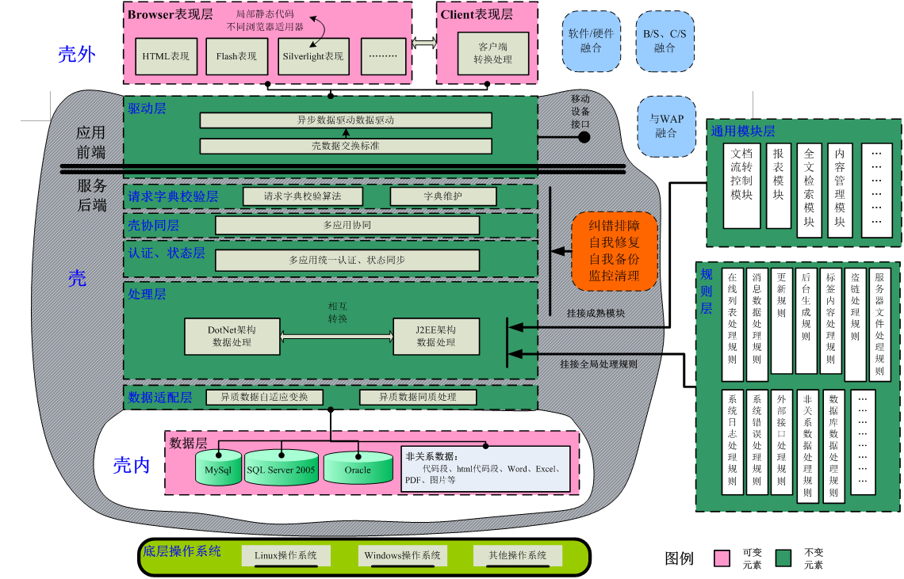
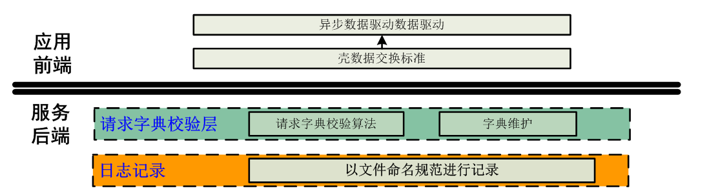
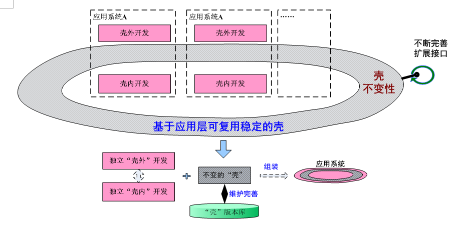
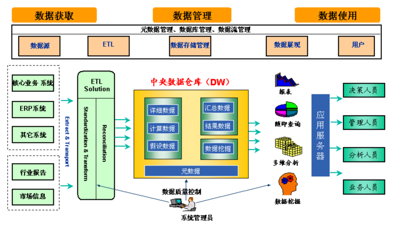

数据智能管理系统
功能介绍
从应用范围上考虑，将在当前用户已有的应用系统的基础信息数据库运行环境基础上。要求系统采用先进的技术及模块化结构设计，采用先进的B/S与C/S融合 体系结构，功能及数据的可扩充性和可维护性程度要高。
系统同时应具有多种查询、输出方式，手段丰富，人机对话界面应友善，操作方便，降低用户掌握系统操作的难度，从而有利于系统的推广使用。
性能指标
系统性能目标主要包括以下几个方面
-
符合行业的有关标准和规范。
-
系统平台应具备良好的跨部门、跨系统、跨网络结构的能力。
-
系统应支持主流数据库、主流Web服务器、中间件服务器、操作系统等。
-
平台应便于管理和控制，提供完整的安装、部署、配置和监控手段，保证平台的高度可维护性和可扩展性。
-
客户端应用程序运行环境应支持Windows主流操作系统。
-
具有数据完整性、一致性和安全性。
-
系统处理性能应能满足用户的业务处理需求，采用可靠的部署设计达到高可用性等目标。
-
满足5000人同时在线，400并发操作。
系统开发环境
Ane支撑平台
-
Ane支撑平台是我公司拥有完全自主知识产品，采用“基于网络应用系统架构”与“软件开发架构”无缝结合的基于规则的壳模型多层体系架构基础平台，是在充分考虑和融合各类异质平台特点、敏捷软件开发技术以及CMMI模型中关键过程域、目标、方法基础上提出的，经过多年开发、应用并完善的创新性公司架构平台。平台架构如下图:

-
架构的优势：
-
安全，独特的“请求字典本架构最大特点是将开发中不变性因素与可变性因素精准统一，即：规则、模块、架构不变性表现、数据的可变性的精准统一，达到重用代码、完善架构与专注用户需求的完美统一”模式，让任何侵犯无懈可击。
-
速度快，所有页面均为静态页面，静中含动，即静态中通过异步通信技术取得数据，不传输冗余代码，保证数据传输量最小。
-
.Net与J2EE无缝兼容，实现平台无关性，可根据需要选择开发语言，或者二者兼有。
-
快速开发，本架构基本原则要求“以实现敏捷开发与CMMI模型规范作为指导思想”，并在架构实现过程中始终严格贯彻，将开发的信息系统中不变性因素与可变性因素进行精确分离，使得开发过程专注于可变因素——表现层和数据层，专注于需求，而可变因素在架构中只要进行极少规则/模块调整或者不进行任何调整即可成形、完善，因此采用产品化项目开发模式，实现系统性能质量可控、开发过程可控，极大降低了软件开发管理复杂度和难度，提高了开发进度，更好实施敏捷开发要求的“经常性交付”迭代开发过程。使用本架构开发系统速度比常规开发提高40-60%。
-
采用B/S与C/S融合的多层体系架构，其中的应用前端表现层提供了与用户交互的接口，中间的业务逻辑层提供了各类业务处理的最终实现，有统一数据接口与数据库进行数据交互。这各个层次的分离将使整个业务应用系统的结构更清晰，并可进一步促使系统开发（特别是定制化开发）和维护过程的有序化。
本架构要充分实现“三跨三融合”的思想。三跨：跨开发语言、跨操作系统、跨浏览器。三融合：C/S与B/S融合、软硬件融合、与移动设备融合。
-
跨开发语言：
-
Net与J2EE无缝结合，可以在短时间内实现开发语言的转换。.Net毕竟只能在Windows系统下运行，且Windows的安全性远不及Linux系统。
-
跨操作系统：
-
B/S模式系统可以在不同的操作系统上部署，根据需要可随时选用Linux和Windows，实现实时跨平台移植。
-
跨浏览器：
-
B/S结构的网站，用户多通过浏览器访问，浏览器的种类很多，必须兼容大多数浏览器以保证所有用户都能正常登录访问网站，如IE6+、Firefox1.5+、遨游、腾讯、Opera等等。
-
支持数据库：Oracle 10G、11G、12C
-
C/S与B/S融合：
-
门户网站以B/S模式为主，但要与C/S融合，可更好与网内部办公相结合，如操作word，定时提醒事务处理等。整个架构实现B\C的实时同步，因此需要维护B端或者C端，而无需同时维护B或者C端。
-
软硬件融合：
-
特殊功能需求需要与硬件融合，如短信群发，必须与短信硬件设备结合起来。
-
与移动设备融合：
-
移动设备是增值服务的基础，留有接口可为日后的功能完善、适应科技发展趋势相吻合。
平台特性
安全性
-
请求注册机制：在系统“开发阶段”将所有请求进行注册，在“运行阶段”对所有请求进行校验、验证，杜绝任何代码注入的可能。
-
操作日志安全留痕：日志信息和截图一样都具有取证作用，记录所有操作日志具有必要性。日志信息以秒为单位持续积累，一般在1-3周内数据量庞大，如果存储在数据库极大影响了系统效率，用触发器记录日志虽然保证记录的完整性，但对记录操作人员信息的完整性记录不足，因此本系统采用在统一操作入口处进行日志记录，并使用日志文件命名规范方式进行日志存储，定期备份，既不影响系统的稳定可靠，又可以很好保证数据操作日志的完整性。日志还原功能可以很快定位查找相关日志操作。

稳定性
-
壳——顾名思义“坚固”、“可靠”，基于壳模式信息系统，是当今最稳定系统架构之一。壳不变性、自我修复完善特性、基于规则的扩展性，我公司在几十个系统实践使用不断完善，形成九大类规则分类，68种具体规则，已经非常完善，进入成熟稳定期。

高性能、高并发
-
本系统是业务系统，非发布在广域网的公共服务系统，可简化“缓存集群”、“反向代理”，通过使用F5负载均衡，Web服务集群、数据库集群协同工作，达到亿万级高性能、高并发应用系统架构。
